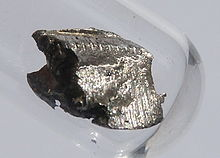

Cerium
|  | |||||||||||||||||||||||||||||||||||||||||||||||||||||||||||||||||||||||||||||||||||||||||||||||||||||||||||||||||||||||||||||||||||||||||||||||||||||||||||||||||||||||||||||||||||||||||||||||||||||||||||||||||||||||||||||||||||||
| General properties | |||||||||||||||||||||||||||||||||||||||||||||||||||||||||||||||||||||||||||||||||||||||||||||||||||||||||||||||||||||||||||||||||||||||||||||||||||||||||||||||||||||||||||||||||||||||||||||||||||||||||||||||||||||||||||||||||||||
|---|---|---|---|---|---|---|---|---|---|---|---|---|---|---|---|---|---|---|---|---|---|---|---|---|---|---|---|---|---|---|---|---|---|---|---|---|---|---|---|---|---|---|---|---|---|---|---|---|---|---|---|---|---|---|---|---|---|---|---|---|---|---|---|---|---|---|---|---|---|---|---|---|---|---|---|---|---|---|---|---|---|---|---|---|---|---|---|---|---|---|---|---|---|---|---|---|---|---|---|---|---|---|---|---|---|---|---|---|---|---|---|---|---|---|---|---|---|---|---|---|---|---|---|---|---|---|---|---|---|---|---|---|---|---|---|---|---|---|---|---|---|---|---|---|---|---|---|---|---|---|---|---|---|---|---|---|---|---|---|---|---|---|---|---|---|---|---|---|---|---|---|---|---|---|---|---|---|---|---|---|---|---|---|---|---|---|---|---|---|---|---|---|---|---|---|---|---|---|---|---|---|---|---|---|---|---|---|---|---|---|---|---|---|---|---|---|---|---|---|---|---|---|---|---|---|---|---|---|---|
| Name, symbol | cerium, Ce | ||||||||||||||||||||||||||||||||||||||||||||||||||||||||||||||||||||||||||||||||||||||||||||||||||||||||||||||||||||||||||||||||||||||||||||||||||||||||||||||||||||||||||||||||||||||||||||||||||||||||||||||||||||||||||||||||||||
| Pronunciation | /ˈsɪəriəm/ | ||||||||||||||||||||||||||||||||||||||||||||||||||||||||||||||||||||||||||||||||||||||||||||||||||||||||||||||||||||||||||||||||||||||||||||||||||||||||||||||||||||||||||||||||||||||||||||||||||||||||||||||||||||||||||||||||||||
| Appearance | silvery white | ||||||||||||||||||||||||||||||||||||||||||||||||||||||||||||||||||||||||||||||||||||||||||||||||||||||||||||||||||||||||||||||||||||||||||||||||||||||||||||||||||||||||||||||||||||||||||||||||||||||||||||||||||||||||||||||||||||
| Cerium in the periodic table | |||||||||||||||||||||||||||||||||||||||||||||||||||||||||||||||||||||||||||||||||||||||||||||||||||||||||||||||||||||||||||||||||||||||||||||||||||||||||||||||||||||||||||||||||||||||||||||||||||||||||||||||||||||||||||||||||||||
|
|||||||||||||||||||||||||||||||||||||||||||||||||||||||||||||||||||||||||||||||||||||||||||||||||||||||||||||||||||||||||||||||||||||||||||||||||||||||||||||||||||||||||||||||||||||||||||||||||||||||||||||||||||||||||||||||||||||
| Atomic number | 58 | ||||||||||||||||||||||||||||||||||||||||||||||||||||||||||||||||||||||||||||||||||||||||||||||||||||||||||||||||||||||||||||||||||||||||||||||||||||||||||||||||||||||||||||||||||||||||||||||||||||||||||||||||||||||||||||||||||||
| Standard atomic weight (±) | 140.116(1)[1] | ||||||||||||||||||||||||||||||||||||||||||||||||||||||||||||||||||||||||||||||||||||||||||||||||||||||||||||||||||||||||||||||||||||||||||||||||||||||||||||||||||||||||||||||||||||||||||||||||||||||||||||||||||||||||||||||||||||
| Element category | lanthanide | ||||||||||||||||||||||||||||||||||||||||||||||||||||||||||||||||||||||||||||||||||||||||||||||||||||||||||||||||||||||||||||||||||||||||||||||||||||||||||||||||||||||||||||||||||||||||||||||||||||||||||||||||||||||||||||||||||||
| Group, block | group n/a, f-block | ||||||||||||||||||||||||||||||||||||||||||||||||||||||||||||||||||||||||||||||||||||||||||||||||||||||||||||||||||||||||||||||||||||||||||||||||||||||||||||||||||||||||||||||||||||||||||||||||||||||||||||||||||||||||||||||||||||
| Period | period 6 | ||||||||||||||||||||||||||||||||||||||||||||||||||||||||||||||||||||||||||||||||||||||||||||||||||||||||||||||||||||||||||||||||||||||||||||||||||||||||||||||||||||||||||||||||||||||||||||||||||||||||||||||||||||||||||||||||||||
| Electron configuration | [Xe] 4f1 5d1 6s2[2] | ||||||||||||||||||||||||||||||||||||||||||||||||||||||||||||||||||||||||||||||||||||||||||||||||||||||||||||||||||||||||||||||||||||||||||||||||||||||||||||||||||||||||||||||||||||||||||||||||||||||||||||||||||||||||||||||||||||
| per shell | 2, 8, 18, 19, 9, 2 | ||||||||||||||||||||||||||||||||||||||||||||||||||||||||||||||||||||||||||||||||||||||||||||||||||||||||||||||||||||||||||||||||||||||||||||||||||||||||||||||||||||||||||||||||||||||||||||||||||||||||||||||||||||||||||||||||||||
| Physical properties | |||||||||||||||||||||||||||||||||||||||||||||||||||||||||||||||||||||||||||||||||||||||||||||||||||||||||||||||||||||||||||||||||||||||||||||||||||||||||||||||||||||||||||||||||||||||||||||||||||||||||||||||||||||||||||||||||||||
| Phase | solid | ||||||||||||||||||||||||||||||||||||||||||||||||||||||||||||||||||||||||||||||||||||||||||||||||||||||||||||||||||||||||||||||||||||||||||||||||||||||||||||||||||||||||||||||||||||||||||||||||||||||||||||||||||||||||||||||||||||
| Melting point | 1068 K (795 °C, 1463 °F) | ||||||||||||||||||||||||||||||||||||||||||||||||||||||||||||||||||||||||||||||||||||||||||||||||||||||||||||||||||||||||||||||||||||||||||||||||||||||||||||||||||||||||||||||||||||||||||||||||||||||||||||||||||||||||||||||||||||
| Boiling point | 3716 K (3443 °C, 6229 °F) | ||||||||||||||||||||||||||||||||||||||||||||||||||||||||||||||||||||||||||||||||||||||||||||||||||||||||||||||||||||||||||||||||||||||||||||||||||||||||||||||||||||||||||||||||||||||||||||||||||||||||||||||||||||||||||||||||||||
| Density near r.t. | 6.770 g·cm−3 | ||||||||||||||||||||||||||||||||||||||||||||||||||||||||||||||||||||||||||||||||||||||||||||||||||||||||||||||||||||||||||||||||||||||||||||||||||||||||||||||||||||||||||||||||||||||||||||||||||||||||||||||||||||||||||||||||||||
| when liquid, at m.p. | 6.55 g·cm−3 | ||||||||||||||||||||||||||||||||||||||||||||||||||||||||||||||||||||||||||||||||||||||||||||||||||||||||||||||||||||||||||||||||||||||||||||||||||||||||||||||||||||||||||||||||||||||||||||||||||||||||||||||||||||||||||||||||||||
| Heat of fusion | 5.46 kJ·mol−1 | ||||||||||||||||||||||||||||||||||||||||||||||||||||||||||||||||||||||||||||||||||||||||||||||||||||||||||||||||||||||||||||||||||||||||||||||||||||||||||||||||||||||||||||||||||||||||||||||||||||||||||||||||||||||||||||||||||||
| Heat of vaporization | 398 kJ·mol−1 | ||||||||||||||||||||||||||||||||||||||||||||||||||||||||||||||||||||||||||||||||||||||||||||||||||||||||||||||||||||||||||||||||||||||||||||||||||||||||||||||||||||||||||||||||||||||||||||||||||||||||||||||||||||||||||||||||||||
| Molar heat capacity | 26.94 J·mol−1·K−1 | ||||||||||||||||||||||||||||||||||||||||||||||||||||||||||||||||||||||||||||||||||||||||||||||||||||||||||||||||||||||||||||||||||||||||||||||||||||||||||||||||||||||||||||||||||||||||||||||||||||||||||||||||||||||||||||||||||||
vapor pressure
|
|||||||||||||||||||||||||||||||||||||||||||||||||||||||||||||||||||||||||||||||||||||||||||||||||||||||||||||||||||||||||||||||||||||||||||||||||||||||||||||||||||||||||||||||||||||||||||||||||||||||||||||||||||||||||||||||||||||
| Atomic properties | |||||||||||||||||||||||||||||||||||||||||||||||||||||||||||||||||||||||||||||||||||||||||||||||||||||||||||||||||||||||||||||||||||||||||||||||||||||||||||||||||||||||||||||||||||||||||||||||||||||||||||||||||||||||||||||||||||||
| Oxidation states | 4, 3, 2, 1 (a mildly basic oxide) | ||||||||||||||||||||||||||||||||||||||||||||||||||||||||||||||||||||||||||||||||||||||||||||||||||||||||||||||||||||||||||||||||||||||||||||||||||||||||||||||||||||||||||||||||||||||||||||||||||||||||||||||||||||||||||||||||||||
| Electronegativity | Pauling scale: 1.12 | ||||||||||||||||||||||||||||||||||||||||||||||||||||||||||||||||||||||||||||||||||||||||||||||||||||||||||||||||||||||||||||||||||||||||||||||||||||||||||||||||||||||||||||||||||||||||||||||||||||||||||||||||||||||||||||||||||||
| Ionization energies | 1st: 534.4 kJ·mol−1 2nd: 1050 kJ·mol−1 3rd: 1949 kJ·mol−1 (more) |
||||||||||||||||||||||||||||||||||||||||||||||||||||||||||||||||||||||||||||||||||||||||||||||||||||||||||||||||||||||||||||||||||||||||||||||||||||||||||||||||||||||||||||||||||||||||||||||||||||||||||||||||||||||||||||||||||||
| Atomic radius | empirical: 181.8 pm | ||||||||||||||||||||||||||||||||||||||||||||||||||||||||||||||||||||||||||||||||||||||||||||||||||||||||||||||||||||||||||||||||||||||||||||||||||||||||||||||||||||||||||||||||||||||||||||||||||||||||||||||||||||||||||||||||||||
| Covalent radius | 204±9 pm | ||||||||||||||||||||||||||||||||||||||||||||||||||||||||||||||||||||||||||||||||||||||||||||||||||||||||||||||||||||||||||||||||||||||||||||||||||||||||||||||||||||||||||||||||||||||||||||||||||||||||||||||||||||||||||||||||||||
| Miscellanea | |||||||||||||||||||||||||||||||||||||||||||||||||||||||||||||||||||||||||||||||||||||||||||||||||||||||||||||||||||||||||||||||||||||||||||||||||||||||||||||||||||||||||||||||||||||||||||||||||||||||||||||||||||||||||||||||||||||
| Crystal structure | double hexagonal close-packed (dhcp)
 β-Ce |
||||||||||||||||||||||||||||||||||||||||||||||||||||||||||||||||||||||||||||||||||||||||||||||||||||||||||||||||||||||||||||||||||||||||||||||||||||||||||||||||||||||||||||||||||||||||||||||||||||||||||||||||||||||||||||||||||||
| Crystal structure | face-centered cubic (fcc)
γ-Ce |
||||||||||||||||||||||||||||||||||||||||||||||||||||||||||||||||||||||||||||||||||||||||||||||||||||||||||||||||||||||||||||||||||||||||||||||||||||||||||||||||||||||||||||||||||||||||||||||||||||||||||||||||||||||||||||||||||||
| Speed of sound thin rod | 2100 m·s−1 (at 20 °C) | ||||||||||||||||||||||||||||||||||||||||||||||||||||||||||||||||||||||||||||||||||||||||||||||||||||||||||||||||||||||||||||||||||||||||||||||||||||||||||||||||||||||||||||||||||||||||||||||||||||||||||||||||||||||||||||||||||||
| Thermal expansion | γ, poly: 6.3 µm·m−1·K−1 (at r.t.) | ||||||||||||||||||||||||||||||||||||||||||||||||||||||||||||||||||||||||||||||||||||||||||||||||||||||||||||||||||||||||||||||||||||||||||||||||||||||||||||||||||||||||||||||||||||||||||||||||||||||||||||||||||||||||||||||||||||
| Thermal conductivity | 11.3 W·m−1·K−1 | ||||||||||||||||||||||||||||||||||||||||||||||||||||||||||||||||||||||||||||||||||||||||||||||||||||||||||||||||||||||||||||||||||||||||||||||||||||||||||||||||||||||||||||||||||||||||||||||||||||||||||||||||||||||||||||||||||||
| Electrical resistivity | β, poly: 828 nΩ·m (at r.t.) | ||||||||||||||||||||||||||||||||||||||||||||||||||||||||||||||||||||||||||||||||||||||||||||||||||||||||||||||||||||||||||||||||||||||||||||||||||||||||||||||||||||||||||||||||||||||||||||||||||||||||||||||||||||||||||||||||||||
| Magnetic ordering | paramagnetic[3] | ||||||||||||||||||||||||||||||||||||||||||||||||||||||||||||||||||||||||||||||||||||||||||||||||||||||||||||||||||||||||||||||||||||||||||||||||||||||||||||||||||||||||||||||||||||||||||||||||||||||||||||||||||||||||||||||||||||
| Young's modulus | γ form: 33.6 GPa | ||||||||||||||||||||||||||||||||||||||||||||||||||||||||||||||||||||||||||||||||||||||||||||||||||||||||||||||||||||||||||||||||||||||||||||||||||||||||||||||||||||||||||||||||||||||||||||||||||||||||||||||||||||||||||||||||||||
| Shear modulus | γ form: 13.5 GPa | ||||||||||||||||||||||||||||||||||||||||||||||||||||||||||||||||||||||||||||||||||||||||||||||||||||||||||||||||||||||||||||||||||||||||||||||||||||||||||||||||||||||||||||||||||||||||||||||||||||||||||||||||||||||||||||||||||||
| Bulk modulus | γ form: 21.5 GPa | ||||||||||||||||||||||||||||||||||||||||||||||||||||||||||||||||||||||||||||||||||||||||||||||||||||||||||||||||||||||||||||||||||||||||||||||||||||||||||||||||||||||||||||||||||||||||||||||||||||||||||||||||||||||||||||||||||||
| Poisson ratio | γ form: 0.24 | ||||||||||||||||||||||||||||||||||||||||||||||||||||||||||||||||||||||||||||||||||||||||||||||||||||||||||||||||||||||||||||||||||||||||||||||||||||||||||||||||||||||||||||||||||||||||||||||||||||||||||||||||||||||||||||||||||||
| Mohs hardness | 2.5 | ||||||||||||||||||||||||||||||||||||||||||||||||||||||||||||||||||||||||||||||||||||||||||||||||||||||||||||||||||||||||||||||||||||||||||||||||||||||||||||||||||||||||||||||||||||||||||||||||||||||||||||||||||||||||||||||||||||
| Vickers hardness | 210–470 MPa | ||||||||||||||||||||||||||||||||||||||||||||||||||||||||||||||||||||||||||||||||||||||||||||||||||||||||||||||||||||||||||||||||||||||||||||||||||||||||||||||||||||||||||||||||||||||||||||||||||||||||||||||||||||||||||||||||||||
| Brinell hardness | 186–412 MPa | ||||||||||||||||||||||||||||||||||||||||||||||||||||||||||||||||||||||||||||||||||||||||||||||||||||||||||||||||||||||||||||||||||||||||||||||||||||||||||||||||||||||||||||||||||||||||||||||||||||||||||||||||||||||||||||||||||||
| CAS Registry Number | 7440-45-1 | ||||||||||||||||||||||||||||||||||||||||||||||||||||||||||||||||||||||||||||||||||||||||||||||||||||||||||||||||||||||||||||||||||||||||||||||||||||||||||||||||||||||||||||||||||||||||||||||||||||||||||||||||||||||||||||||||||||
| History | |||||||||||||||||||||||||||||||||||||||||||||||||||||||||||||||||||||||||||||||||||||||||||||||||||||||||||||||||||||||||||||||||||||||||||||||||||||||||||||||||||||||||||||||||||||||||||||||||||||||||||||||||||||||||||||||||||||
| Naming | after dwarf planet Ceres, itself named after Roman deity of agriculture Ceres | ||||||||||||||||||||||||||||||||||||||||||||||||||||||||||||||||||||||||||||||||||||||||||||||||||||||||||||||||||||||||||||||||||||||||||||||||||||||||||||||||||||||||||||||||||||||||||||||||||||||||||||||||||||||||||||||||||||
| Discovery | Martin Heinrich Klaproth, Jöns Jakob Berzelius, Wilhelm Hisinger (1803) | ||||||||||||||||||||||||||||||||||||||||||||||||||||||||||||||||||||||||||||||||||||||||||||||||||||||||||||||||||||||||||||||||||||||||||||||||||||||||||||||||||||||||||||||||||||||||||||||||||||||||||||||||||||||||||||||||||||
| First isolation | Carl Gustaf Mosander (1839) | ||||||||||||||||||||||||||||||||||||||||||||||||||||||||||||||||||||||||||||||||||||||||||||||||||||||||||||||||||||||||||||||||||||||||||||||||||||||||||||||||||||||||||||||||||||||||||||||||||||||||||||||||||||||||||||||||||||
| Most stable isotopes | |||||||||||||||||||||||||||||||||||||||||||||||||||||||||||||||||||||||||||||||||||||||||||||||||||||||||||||||||||||||||||||||||||||||||||||||||||||||||||||||||||||||||||||||||||||||||||||||||||||||||||||||||||||||||||||||||||||
|
|||||||||||||||||||||||||||||||||||||||||||||||||||||||||||||||||||||||||||||||||||||||||||||||||||||||||||||||||||||||||||||||||||||||||||||||||||||||||||||||||||||||||||||||||||||||||||||||||||||||||||||||||||||||||||||||||||||
| Decay modes in parentheses are predicted, but have not yet been observed | |||||||||||||||||||||||||||||||||||||||||||||||||||||||||||||||||||||||||||||||||||||||||||||||||||||||||||||||||||||||||||||||||||||||||||||||||||||||||||||||||||||||||||||||||||||||||||||||||||||||||||||||||||||||||||||||||||||
Cerium is a chemical element with symbol Ce and atomic number 58. It is a soft, silvery, ductile metal which easily oxidizes in air. Cerium was named after the dwarf planet Ceres (itself named after the Roman goddess of agriculture). Cerium is the most abundant of the rare earth elements, making up about 0.0046% of the Earth's crust by weight. It is found in a number of minerals, the most important being monazite and bastnäsite. Commercial applications of cerium are numerous. They include catalysts, additives to fuel to reduce emissions and to glass and enamels to change their color. Cerium oxide is an important component of glass polishing powders and phosphors used in screens and fluorescent lamps. It is also used in the "flint" (actually ferrocerium) of lighters.
Contents
[hide]Characteristics[edit]
Physical properties[edit]
Cerium is a silvery metal, belonging to the lanthanide group. It resembles iron in color and luster, but is soft, and both malleable and ductile. Cerium has the second-longest liquid range of any non-radioactive element: 2648 °C (795 °C to 3443 °C) or 4766 °F (1463 °F to 6229 °F). (Only thorium is known to have longer liquid ranges.)[4]
Cerium has a variable electronic structure. The energy of the inner 4f level is nearly the same as that of the outer or valence electrons, and only small energy is required to change the relative occupancy of these electronic levels. This gives rise to dual valency states. For example, a volume change of about 10% occurs when cerium is subjected to high pressures or low temperatures. It appears that the valence changes from about 3 to 4 when it is cooled or compressed.
Four allotropic forms of cerium are known to exist at standard pressure, and are given the common labels of α to δ:.[5]
- The high-temperature form, δ-cerium, has a bcc (body-centred cubic) crystal structure and exists above 726 °C.
- The stable form below 726 °C to approximately room temperature is γ-cerium, with an fcc (face-centred cubic) crystal structure.
- The dhcp (double hexagonal close-packed) form of β-cerium is the equilibrium structure approximately from room temperature to −150 °C
- The fcc α-cerium exists below about −150 °C; it has a density of 8.16 g/cm3
- Other solid phases occurring only at high pressures are shown on the phase diagram.
- Both γ and β forms are quite stable at room temperature, although the equilibrium transformation temperature is estimated at ca. 75 °C.
At lower temperatures the behavior of cerium is complicated by the slow rates of transformation. Transformation temperatures are subject to substantial hysteresis and values quoted here are approximate. Upon cooling below −15 °C, γ-cerium starts to change to β-cerium, but the transformation involves a volume increase and, as more β forms, the internal stresses build up and suppress further transformation.[5] Cooling below approximately −160 °C will start formation of α-cerium but this is only from remaining γ-cerium. β-cerium does not significantly transform to α-cerium except in the presence of stress or deformation.[5]
At atmospheric pressure, liquid cerium is more dense than its solid form at the melting point.[6][7][8]
Chemical properties[edit]
Cerium metal tarnishes slowly in air and burns readily at 150 °C to form cerium(IV) oxide:
- Ce + O2 → CeO2
Cerium metal is highly pyrophoric, meaning that when it is ground or scratched, the resulting shavings catch fire.[9]
Cerium is quite electropositive and reacts slowly with cold water and quite quickly with hot water to form cerium hydroxide:
- 2 Ce (s) + 6 H2O (l) → 2 Ce(OH)3 (aq) + 3 H2 (g)
Cerium metal reacts with all the halogens:
- 2 Ce (s) + 3 F2 (g) → 2 CeF3 (s) [white]
- 2 Ce (s) + 3 Cl2 (g) → 2 CeCl3 (s) [white]
- 2 Ce (s) + 3 Br2 (g) → 2 CeBr3 (s) [white]
- 2 Ce (s) + 3 I2 (g) → 2 CeI3 (s) [yellow]
Cerium dissolves readily in dilute sulfuric acid to form solutions containing the colorless Ce(III) ions, which exist as a [Ce(OH2)9]3+ complexes:[10]
- 2 Ce (s) + 3 H2SO4 (aq) → 2 Ce3+ (aq) + 3 SO2−
4 (aq) + 3 H2 (g)
The solubility of cerium is much higher in methanesulfonic acid.[11]
Compounds[edit]
Cerium(IV) (ceric) salts are orange red or yellowish, whereas cerium(III) (cerous) salts are usually white or colorless. Both oxidation states absorb ultraviolet light strongly. Cerium(III) can be used to make glasses that are colorless, yet absorb ultraviolet light almost completely.[12][13] Cerium can be readily detected in rare earth mixtures by a very sensitive qualitative test: addition of ammonia and hydrogen peroxide to an aqueous solution of lanthanides produces a characteristic dark brown color if cerium is present.
Cerium exhibits three oxidation states, +2, +3 and +4. The +2 state is rare and is observed in some organometallic complexes.[14][15] The compounds CeH2, CeI2 and CeS have electride-like structure with Ce3+ and delocalized electrons. The most common compound of cerium is cerium(IV) oxide (CeO2), which is used as "Jeweller's rouge" as well as in the walls of some self-cleaning ovens. Two common oxidizing agents used in titrations are ammonium cerium(IV) sulfate (ceric ammonium sulfate, (NH4)2Ce(SO4)3) and ammonium cerium(IV) nitrate (ceric ammonium nitrate or CAN, (NH4)2Ce(NO3)6). Cerium also forms a chloride, CeCl3 or cerium(III) chloride, used to facilitate reactions at carbonyl groups in organic chemistry. Other compounds include cerium(III) carbonate (Ce2(CO3)3), cerium(III) fluoride (CeF3), cerium(III) oxide (Ce2O3), as well as cerium(IV) sulfate (ceric sulfate, Ce(SO4)2) and cerium(III) triflate (Ce(OSO2CF3)3).
The differing properties of the two oxidation states of cerium allows cerium to be the most readily purified of all the lanthanides. Otherwise these elements are notoriously difficult to separate. A wide range of procedures have been devised that exploit the difference. These include:
- Leaching the mixed hydroxides with dilute nitric acid: the trivalent lanthanides dissolve in cerium-free condition, and tetravalent cerium remains in the insoluble residue as a concentrate to be further purified by other means. A variation on this uses hydrochloric acid and the calcined oxides from bastnasite, but the separation is less sharp.
- Precipitating cerium from a nitrate or chloride solution using potassium permanganate and sodium carbonate in a 1:4 molar ratio.
- Boiling rare-earth nitrate solutions with potassium bromate and marble chips.
Formerly used commercially was a method whereby a solution of cerium(IV) in nitric acid would be added to dilute sulfuric acid. This step caused cerium(IV) to largely precipitate as a basic salt, leaving trivalent lanthanide in solution. However, the finely divided precipitate was difficult to filter from the highly corrosive medium. Using the classical methods of rare-earth separation, there was a considerable advantage to a strategy of removing cerium from the mixture at the beginning. Cerium typically comprised 45% of the cerite or monazite rare earths, and removing it early greatly reduced the bulk of what needed to be further processed (or the cost of reagents to be associated with such processing). However, not all cerium purification methods relied on basicity. Ceric ammonium nitrate [ammonium hexanitratocerate(IV)] crystallization from nitric acid was one purification method. Cerium(IV) nitrate (hexanitratoceric acid) was more readily extractable into certain solvents (e.g. tri-n-butyl phosphate) than the trivalent lanthanides. However, modern practice in China seems to be to do purification of cerium by counter-current solvent extraction, in its trivalent form, just like the other lanthanides.
Cerium(IV) is a strong oxidant under acidic conditions, but stable under alkaline conditions, when it is cerium(III) that becomes a strong reductant, easily oxidized by atmospheric oxygen (O2). This ease of oxidation under alkaline conditions leads to the occasional geochemical parting of the ways between cerium and the trivalent light lanthanides under supergene weathering conditions, leading variously to the "negative cerium anomaly" or to the formation of the mineral cerianite. Air-oxidation of alkaline cerium(III) is the most economical way to get to cerium(IV), which can then be handled in acid solution.
Isotopes[edit]
Four isotopes of cerium occur naturally. These are 140Ce, which makes up 88.5% of cerium on earth; 142Ce, which makes up 11% of cerium on earth; 138Ce, which makes up 0.3% of cerium on earth; and 136Ce, which makes up 0.2% of cerium on Earth. However, only 140Ce is stable. 142Ce, 138Ce, and 136Ce have half-lives of 5×1016 years, 1.5×1015 years, and 70 trillion years respectively. Additionally, some isotopes of cerium occur naturally in trace amounts as the result of fission of uranium.[12]
39 isotopes of cerium have been discovered. They range from 119Ce to 157Ce. Cerium also has 10 known nuclear isomers.[12] Aside from the nearly-stable isotopes, the longest-lived isotopes of cerium are 139Ce and 144Ce, which have half-lives on the order of 107 seconds (115.74 days). An additional eight isotopes have half-lives greater than 1000 seconds (16 minutes and 40 seconds). All but 16 isotopes of cerium have half-lives greater than 1 second. The least stable isotopes whose half-lives are known are 153Ce, 154Ce and 155Ce. They have half-lives on the order of 10−7 seconds. All the isotopes lighter than 140Ce decay by electron capture or β+ decay. All the isotopes heavier than 140Ce decay by β− decay.[16]
History[edit]
Cerium was discovered in Bastnäs in Sweden by Jöns Jakob Berzelius and Wilhelm Hisinger, and independently in Germany by Martin Heinrich Klaproth, both in 1803.[17] Cerium was named by Berzelius after the dwarf planet Ceres, discovered two years earlier (1801).[12] As originally isolated, cerium was in the form of its oxide, and was named ceria, a term that is still used. The metal itself was too electropositive to be isolated by then-current smelting technology, a characteristic of rare earth metals in general. After the development of electrochemistry by Humphry Davy five years later, the earths soon yielded the metals they contained. Ceria, as isolated in 1803, contained all of the lanthanides present in the cerite ore from Bastnäs, Sweden, and thus only contained about 45% of what is now known to be pure ceria. It was not until Carl Gustaf Mosander succeeded in removing lanthana and "didymia" in the late 1830s, that ceria was obtained pure. Wilhelm Hisinger was a wealthy mine owner and amateur scientist, and sponsor of Berzelius. He owned or controlled the mine at Bastnäs, and had been trying for years to find out the composition of the abundant heavy gangue rock (the "Tungsten of Bastnäs"), now known as cerite, that he had in his mine.[12] Mosander and his family lived for many years in the same house as Berzelius, and Mosander was undoubtedly persuaded by Berzelius to investigate ceria further.[18]
When the rare earths were first discovered, since they were strong bases like the oxides of calcium or magnesium, they were thought to be divalent. Thus, "ceric" cerium was thought to be trivalent, and the oxidation state ratio was therefore thought to be 1.5. Berzelius was annoyed to keep on getting the correct ratio 1.33.
In the late 1950s, the Lindsay Chemical Division of American Potash and Chemical Corporation of West Chicago, Illinois, then the largest producer of rare earths in the world, was offering cerium compounds in two purity ranges, "commercial" at 94–97% purity, and "purified", at a reported 99.9+% purity. In their October 1, 1958 price list, one-pound quantities of the oxides were priced at $3.30 or $8.10 respectively for the two purities; the per-pound price for 50-pound quantities were respectively $1.95 or $4.95 for the two grades. Cerium salts were proportionately cheaper, reflecting their lower net content of oxide.
Occurrence[edit]

{kind=link}
{kind=link}
{kind=link}
{kind=link}
Cerium is the most abundant of the rare earth elements, making up about 0.0046% of the Earth's crust by weight. It is found in a number of minerals including allanite (also known as orthite)—(Ca,Ce,La,Y)2(Al,Fe)3(SiO4)3(OH), monazite (Ce,La,Th,Nd,Y)PO4, bastnasite (Ce,La,Y)CO3F, hydroxylbastnasite (Ce,La,Nd)CO3(OH,F), rhabdophane (Ce,La,Nd)PO4·H2O, zircon (ZrSiO4), and synchysite Ca(Ce,La,Nd,Y)(CO3)2F. Monazite and bastnasite are presently the two most important sources of cerium. Large deposits of monazite, allanite, and bastnasite will supply cerium, thorium, and other rare-earth metals for many years to come.[7]
Cerium content in the soil varies between 2 and 150 parts per million (ppm), with an average of 50 ppm. Seawater contains 1.5 parts per trillion of cerium. There is almost no cerium in the atmosphere.[12]
Production[edit]
The mineral mixtures are crushed, ground and treated with hot concentrated sulfuric acid to produce water-soluble sulfates of rare earths. The acidic filtrates are partially neutralized with sodium hydroxide to pH 3–4. Thorium precipitates out of solution as hydroxide and is removed. After that the solution is treated with ammonium oxalate to convert rare earths into their insoluble oxalates. The oxalates are converted to oxides by annealing. The oxides are dissolved in nitric acid that excludes one of the main components, cerium, whose salts are insoluble in HNO3. Metallic cerium is prepared by metallothermic reduction techniques, such as by reducing cerium fluoride or chloride with calcium, or by electrolysis of molten cerous chloride or other cerous halides. The metallothermic technique is used to produce high-purity cerium.[8] The annual world production of cerium is in the region of 24,000 mt.[19]
Applications[edit]
A traditional use of cerium was in the pyrophoric ferrocerium alloy used for lighter flints.[9]
Because of the high affinity of cerium to sulfur and oxygen, cerium itself or as mischmetal is used in various aluminum alloys, and iron alloys. In steels, cerium degasifies and can help reduce sulfides and oxides, and it is a precipitation hardening agent in stainless steel. Adding cerium to cast irons opposes graphitization and produces a malleable iron. Addition of 3–4% of cerium to magnesium alloys, along with 0.2–0.6% zirconium, helps refine the grain and give sound casting of complex shapes. It also adds heat resistance to magnesium castings. Cerium metal is sometimes added to aluminum to improve aluminum's corrosion resistance.[12][20]
Cerium alloys are used in permanent magnets, and in tungsten electrodes for gas tungsten arc welding. Cerium is used in carbon-arc lighting, especially in the motion picture industry.
CMP[edit]
Ceria (CeO2) is the most widely used compound of cerium. The main application of ceria is as a polishing compounds, e.g. chemical-mechanical planarization (CMP). In this application, ceria dioxide has replaced other metal oxides for the production of high quality optical surfaces.[20]
Catalysis[edit]
Another important use of cerium oxide is in a hydrocarbon catalyst in self cleaning ovens, incorporated into oven walls and as a petroleum cracking catalyst in petroleum refining.[13][21]
Major automotive applications for cerium(III) oxide are as a catalytic converter for the oxidation of CO and NOx emissions in the exhaust gases from motor vehicles,[22][23]
Niche applications[edit]
The photostability of pigments can be enhanced by the addition of cerium. It provides pigments with light fastness and prevents clear polymers from darkening in sunlight. Television glass plates are subject to electron bombardment, which tends to darken them by creation of F-center color centers. This effect is suppressed by addition of cerium oxide. Cerium is also an essential component of phosphors used in TV screens and fluorescent lamps.[13][21] Cerium sulfide forms a red pigment that stays stable up to 350 °C. The pigment is a nontoxic alternative to cadmium sulfide pigments.[12]
Cerium(IV) oxide is used in incandescent gas mantles, such as the Welsbach mantle, where it was combined with thorium, lanthanum, magnesium, or yttrium oxides.[13]
Cerium(IV) sulfate is used as a volumetric oxidizing agent in quantitative analysis. Ceric ammonium nitrate is an oxidant in organic chemistry and in etching electronic components, and as a primary standard for quantitative analysis.[7][24]
Biological role[edit]
Cerium can act similar to calcium in organisms, so accumulates in bones in small amounts. Cerium is also found in small amounts in tobacco plants, barley, and the wood of beech trees. However, very little cerium accumulates in the food chain. Human blood contains 0.001 ppm, human bones contain 3 ppm, and human tissue contains 0.3 ppm of cerium. There is a total of 40 milligrams of cerium in a typical 70-kilogram human. Humans typically consume less than a milligram per day of cerium. Cerium (or other lanthanides) are the cofactor for the methanol dehydrogenase of the methanotrophic bacterium Methylacidiphilum fumariolicum SolV.[25]
Cerium salts can stimulate metabolism.[12]
Precautions[edit]
Cerium, like all rare-earth metals, is of low to moderate toxicity. Cerium is a strong reducing agent and ignites spontaneously in air at 65 to 80 °C. Fumes from cerium fires are toxic. Water should not be used to stop cerium fires, as cerium reacts with water to produce hydrogen gas. Workers exposed to cerium have experienced itching, sensitivity to heat, and skin lesions. Cerium is not toxic when consumed orally, but animals injected with large doses of cerium have died due to cardiovascular collapse.[12] Cerium is more dangerous to aquatic organisms, on account of being damaging to cell membranes. Cerium(IV) oxide is a powerful oxidizing agent at high temperatures and will react with combustible organic materials. While cerium is not radioactive, the impure commercial grade may contain traces of thorium, which is weakly radioactive.
See also[edit]
References[edit]
- Jump up ^ Standard Atomic Weights 2013. Commission on Isotopic Abundances and Atomic Weights
- Jump up ^ Ground levels and ionization energies for the neutral atoms, NIST
- Jump up ^ Lide, D. R., ed. (2005). "Magnetic susceptibility of the elements and inorganic compounds". CRC Handbook of Chemistry and Physics (PDF) (86th ed.). Boca Raton (FL): CRC Press. ISBN 0-8493-0486-5.
- Jump up ^ Jackson, Mark (2002). Periodic Table Advanced. Barcharts Incorporated. ISBN 1572225424.
- ^ Jump up to: a b c Koskimaki, D. C.; Gschneidner, K. A.; Panousis, N. T. (1974). "Preparation of single phase β and α cerium samples for low temperature measurements". Journal of Crystal Growth 22 (3): 225. doi:10.1016/0022-0248(74)90098-0.
- Jump up ^ Stassis, C.; Gould, T.; McMasters, O.; Gschneidner, K.; Nicklow, R. (1979). "Lattice and spin dynamics of γ-Ce". Physical Review B 19 (11): 5746. Bibcode:1979PhRvB..19.5746S. doi:10.1103/PhysRevB.19.5746.
- ^ Jump up to: a b c Hammond, C. R. (2000). The Elements, in Handbook of Chemistry and Physics (PDF) (81st ed.). CRC press. ISBN 0-8493-0481-4.
- ^ Jump up to: a b Patnaik, Pradyot (2003). Handbook of Inorganic Chemical Compounds. McGraw-Hill. pp. 199–200. ISBN 0-07-049439-8.
- ^ Jump up to: a b Gray, Theodore (2010). The Elements. Black Dog & Leventhal Pub. ISBN 1579128955.
- Jump up ^ "Chemical reactions of Cerium". Webelements. Retrieved 2009-06-06.
- Jump up ^ Kreh, Robert P.; Spotnitz, Robert M.; Lundquist, Joseph T. (1989). "Mediated electrochemical synthesis of aromatic aldehydes, ketones, and quinones using ceric methanesulfonate". The Journal of Organic Chemistry 54 (7): 1526–1531. doi:10.1021/jo00268a010.
- ^ Jump up to: a b c d e f g h i j Emsley, John (2011). Nature's Building Blocks: An A-Z Guide to the Elements. Oxford University Press. pp. 120–125. ISBN 978-0-19-960563-7.
- ^ Jump up to: a b c d Cerium dioxide. nanopartikel.info (2011-02-02)
- Jump up ^ Mikhail N. Bochkarev (2004). "Molecular compounds of "new" divalent lanthanides". Coordination Chemistry Reviews 248 (9–10): 835–851.
- Jump up ^ M. Cristina Cassani; Yurii K. Gun’ko; Peter B. Hitchcock; Alexander G. Hulkes; Alexei V. Khvostov; Michael F. Lappert; Andrey V. Protchenko (2002). "Aspects of non-classical organolanthanide chemistry". Journal of Organometallic Chemistry 647: 71–83.
- Jump up ^ NuDat 2.6. Nndc.bnl.gov. Retrieved on 2014-06-21.
- Jump up ^ "Visual Elements: Cerium". London: Royal Society of Chemistry. 1999–2012. Retrieved December 31, 2009.
- Jump up ^ Weeks, Mary Elvira (1932). "The Discovery of the Elements: XI. Some Elements Isolated with the Aid of Potassium and Sodium:Zirconium, Titanium, Cerium and Thorium". The Journal of Chemical Education 9 (7): 1231–1243. Bibcode:1932JChEd...9.1231W. doi:10.1021/ed009p1231.
- Jump up ^ Cerium. Minor Metals in the Periodic Table. Mmta.co.uk (2012-08-30). Retrieved on 2014-06-21.
- ^ Jump up to: a b Klaus Reinhardt and Herwig Winkler in "Cerium Mischmetal, Cerium Alloys, and Cerium Compounds" in Ullmann's Encyclopedia of Industrial Chemistry 2000, Wiley-VCH, Weinheim. doi:10.1002/14356007.a06_139
- ^ Jump up to: a b Trovarelli, Alessandro (2002). Catalysis by ceria and related materials. Imperial College Press. pp. 6–11. ISBN 978-1-86094-299-0.
- Jump up ^ Bleiwas, D.I. (2013). Potential for Recovery of Cerium Contained in Automotive Catalytic Converters. Reston, Va.: U.S. Department of the Interior, U.S. Geological Survey.
- Jump up ^ "Argonne’s deNOx Catalyst Begins Extensive Diesel Engine Exhaust Testing". Argonne National Laboratory.
- Jump up ^ Gupta, C. K. & Krishnamurthy, Nagaiyar (2004). Extractive metallurgy of rare earths. CRC Press. p. 30. ISBN 0-415-33340-7.
- Jump up ^ Pol, Arjan; Barends, Thomas R. M.; Dietl, Andreas; Khadem, Ahmad F.; Eygensteyn, Jelle; Jetten, Mike S. M.; Op Den Camp, Huub J. M. (2013). "Rare earth metals are essential for methanotrophic life in volcanic mudpots". Environmental Microbiology 16 (1): 255–64. doi:10.1111/1462-2920.12249. PMID 24034209.
External links[edit]
| Wikimedia Commons has media related to Cerium. |
| Look up cerium in Wiktionary, the free dictionary. |
- It's Elemental – The Element Cerium
- Cerium Properties and Applications
- Chemistry in its element podcast (MP3) from the Royal Society of Chemistry's Chemistry World: Cerium
| [hide] Periodic table (Large cells) | |||||||||||||||||||||||||||||||||
|---|---|---|---|---|---|---|---|---|---|---|---|---|---|---|---|---|---|---|---|---|---|---|---|---|---|---|---|---|---|---|---|---|---|
| 1 | 2 | 3 | 4 | 5 | 6 | 7 | 8 | 9 | 10 | 11 | 12 | 13 | 14 | 15 | 16 | 17 | 18 | ||||||||||||||||
| 1 | H | He | |||||||||||||||||||||||||||||||
| 2 | Li | Be | B | C | N | O | F | Ne | |||||||||||||||||||||||||
| 3 | Na | Mg | Al | Si | P | S | Cl | Ar | |||||||||||||||||||||||||
| 4 | K | Ca | Sc | Ti | V | Cr | Mn | Fe | Co | Ni | Cu | Zn | Ga | Ge | As | Se | Br | Kr | |||||||||||||||
| 5 | Rb | Sr | Y | Zr | Nb | Mo | Tc | Ru | Rh | Pd | Ag | Cd | In | Sn | Sb | Te | I | Xe | |||||||||||||||
| 6 | Cs | Ba | La | Ce | Pr | Nd | Pm | Sm | Eu | Gd | Tb | Dy | Ho | Er | Tm | Yb | Lu | Hf | Ta | W | Re | Os | Ir | Pt | Au | Hg | Tl | Pb | Bi | Po | At | Rn | |
| 7 | Fr | Ra | Ac | Th | Pa | U | Np | Pu | Am | Cm | Bk | Cf | Es | Fm | Md | No | Lr | Rf | Db | Sg | Bh | Hs | Mt | Ds | Rg | Cn | 113 | Fl | 115 | Lv | 117 | 118 | |
|
|
|||||||||||||||||||||||||||||||||
|
||
|
||